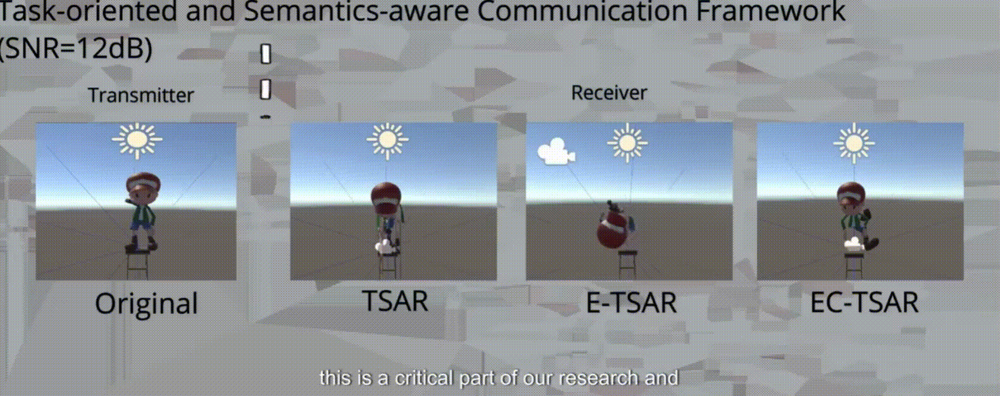
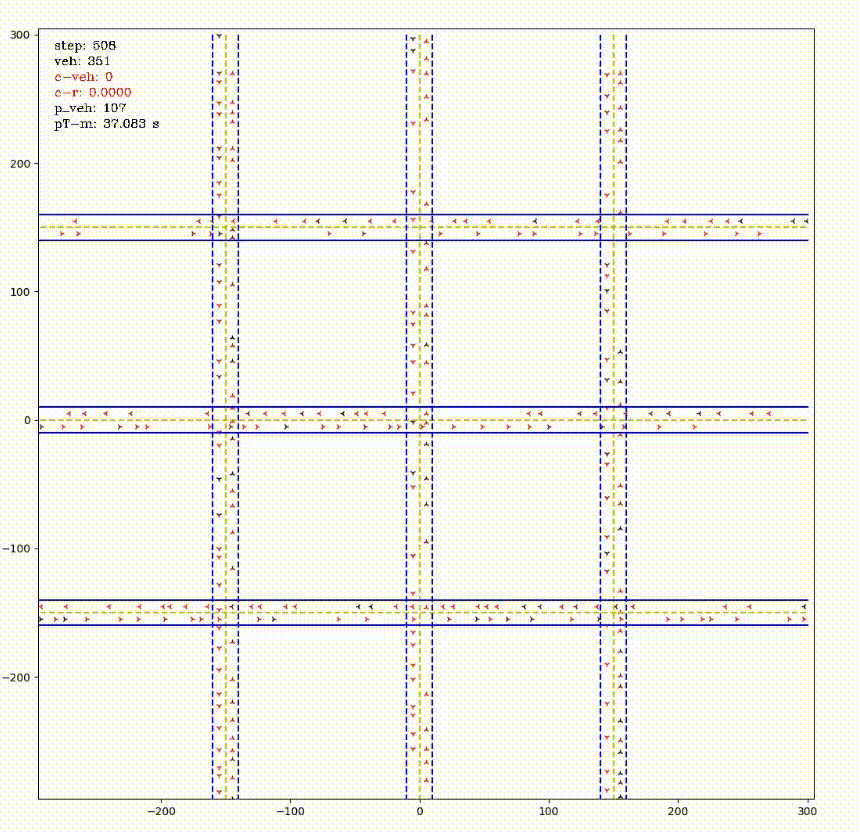
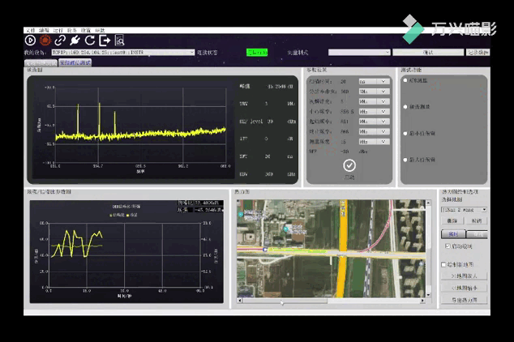

Profile
I am now pursuing my Ph.D. degree at the Centre for Telecommunication Research, Department of Engineering, Faculty of Natural and Mathematical Science, King’s College London, London WC2R 2LS, U.K.
Before that, I was majoring in electronic communication and Telecommunication Science at the School of Telecommunication Science of Beijing University of Posts and Telecommunications, advised by Prof. Lin Zhang. My research mainly focuses on automatic driving simulation based on reinforcement learning and designed algorithm’s application in real-world problems.
I finished my high-school education at Shandong Experimental High School and my Bachelor's (while I was in the FPGA area) in the EE department at Xi’an University of Posts and Telecommunications.
I’m currently a PS4 gamer. You can add my Sony Account using email, and we can play games together :).
Email: tylor.wang@kcl.ac.uk
Publications
[1] An Edge-enabled Wireless Split Learning Testbed: Design and Implementation, 2024 IEEE IEEE Communications Letters [paper]
Authors: Zhe Wang, Luca Boccardo, Yansha Deng.
[2] A Credibility-aware Swarm-Federated Deep Learning Framework in Internet of Vehicles, 2024 Digital Communications and Networks [code] [paper]
Authors: Zhe Wang, Xinhang Li, Tianhao Wu, Chen Xu, Lin Zhang.
[3] Progression Cognition Reinforcement Learning with Prioritized Experience for Multi-Vehicle Pursuit, 2024 IEEE Transactions on Intelligent Transportation Systems [paper]
Authors: Xinhang Li, Yiying Yang, Zheng Yuan, Zhe Wang, Qinwen Wang, Chen Xu, Lei Li, Jianhua He, Lin Zhang.
[4] Task-oriented and Semantics-aware Communications for Augmented Reality, 2023 IEEE Global Communications Conference [paper]
Authors: Zhe Wang, Yansha Deng.
[5] Task-oriented and Semantics-aware Communication Framework for Avatar-centric Augmented Reality, IEEE Transactions on Communications (Submitted) [paper] [video]
Authors: Zhe Wang, Yansha Deng, Hamid.Agvami.
[6] A Multi-intersection Vehicular Cooperative Control Based on End-edge-cloud Computing, 2022 IEEE IEEE Transactions on Vehicular Technology [code] [paper]
Authors: Mingzhi Jiang, Tianhao Wu, Zhe Wang, Lin Zhang, Renping Liu.
[7] Hierarchical Trajectory Planning for Narrow-Space Automated Parking with Deep Reinforcement Learning: A Federated Learning Scheme, 2023 Sensors [code] [paper]
Authors: Zhe Wang, Xinhang Li, Tianhao Wu, Chen Xu, Lin Zhang.
[8] Simulation and Test of Vehicle Global Routing Planning Algorithm Based on Autonomous Driving Simulator, 2022 34th Chinese Control and Decision Conference (CCDC) [paper]
Authors: Yinhui Han, Zhe Wang, Mingzhi Jiang, Lin Zhang
[9] DP-YOLOv5:Computer Vision-Based Risk Behavior Detection in Power Grids, 2021 The fourth Chinese Conference on Pattern Recognition and Computer Vision (PRCV) [poster] [paper]
Authors: Zhe Wang, Yubo Zheng, Xinhang Li, Xikang Jiang, Zheng Yuan, Lei Li, Lin Zhang
[10] Hierarchical Multi-Agent Deep Reinforcement Learning for Multi-Objective Dispatching in Smart Grid, 2021 China Automation Conference (CAC) [poster] [paper]
Authors: Nan Yang, Xinhang Li, Yupeng Huang, Menghao Xiao, Zhe Wang, Xuri Song, Lei Li
[11] Redundant Forward Gateway in Heterogeneous WLAN and LTE-M Networks for Reliable Metro Communication, 2020 IEEE International Conference on Industrial Informatics (Published in Jun. 2020) [paper]
Authors: Zhan Shu, Zhe Wang, Lin Zhang
Competition
[1] First Prize of the Zhijiang Global AI Competition in Automatic Vehicle Race (rank 1/41), Sept. 2020 [Link]
Award: Mingzhi Jiang, Yinhui Han, Zhe Wang, Xinhang Li, Zheng Yuan.

[2] Third Prize of the Jiangsu Electric Power Artificial Intelligence Competition (rank 3/56), March. 2021 [Link]
Award: Zhe Wang, Yubo Zheng, Xinhang Li, Xikang Jiang, Zheng Yuan.
[3] Second Prize of the Sonic Lab Telecommunication challenge (rank 2/10), May. 2023
Award: Yang Su, Zhe Wang, Wenchao Wu.